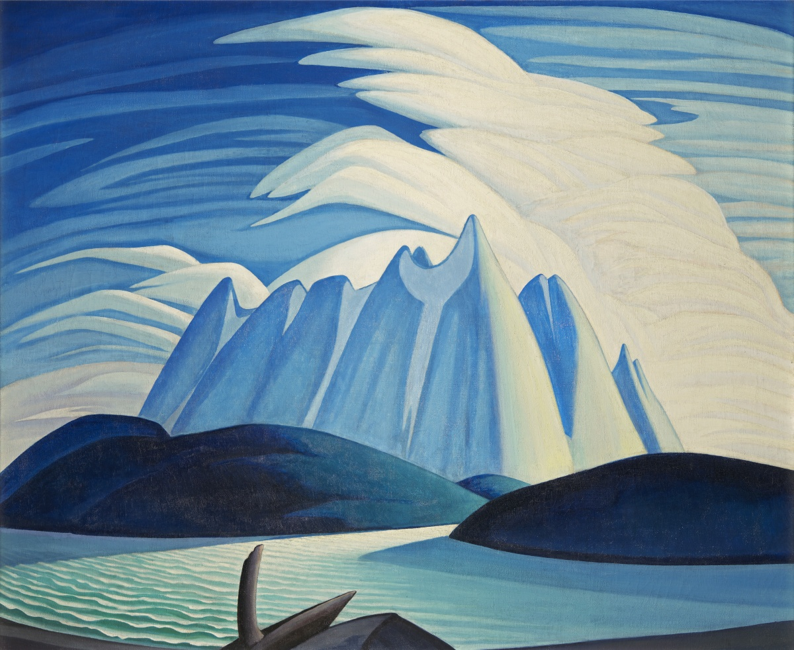
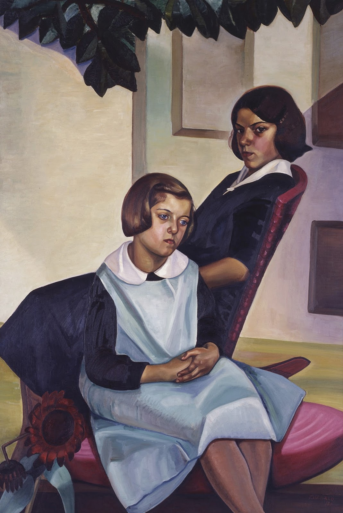
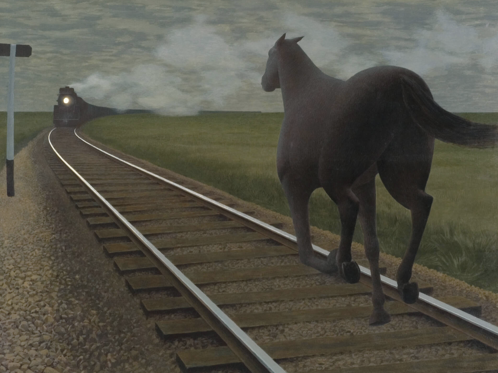
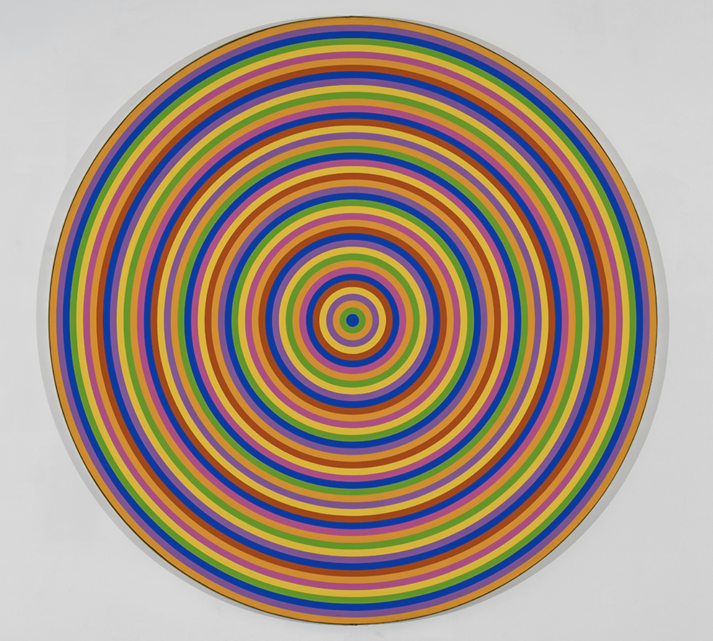

Canadian Impressionism
The Group of Seven
The Modern Portrait
Cold War Realism
Colour Coast to Coast

A trip to Paris to finish studies was common in the Canadian art scene at the end of the 19th century. By the 1890s, French Impressionist works by Monet, Renoir, and Degas had begun to appear regularly in Paris galleries and they greatly influenced some Canadian artists who saw them. One was Marc-Aurèle Suzor-Coté, who won a prized bronze medal at the Exposition Universelle of 1900. On returning to Quebec, he brought the Impressionists' sun-filled colours with him. He also made sculptures influenced by the style of Rodin.